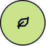

9:41

선우
새싹 탐험가
배지 18개 중 7개를 접었어요
내 배지
전체 보기
25종 탐험가
2027.10.09
함께 발견
2027.10.06
비오는 날 탐험
2027.10.04
나비 박사
나비류 10종만 더
렌즈 마스터
한 장소에서 5종
아침 탐험가
아침 10시 전 탐험
PICO가 알려줘요 !
잎 뒷면도 살펴보세요!
작은 알이 숨어 있을지도 몰라요.
앱 설정
알림 관리
보호자 설정
위치 정보 설정
공지사항
고객센터
서비스 이용 약관
개인정보 처리방침
홈
도감
관찰
친구
마이
 PICO가 알려줘요 !
PICO가 알려줘요 !